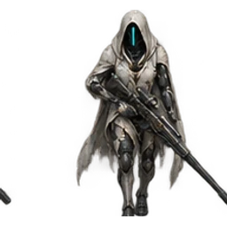
Mnemonic Ghost
Reconnaissance infantry; detects cloaked targets within three cells. Fragile under focus fire.
Cost 480 · HP 6000 · Speed 110 · Base damage 950 · Range 6c0 · Reload 32 ticksThe Noetic Assembly and the Forsaken Host: two new realms, eight subfactions and sixteen exclusive units.
Noetic Assembly
Patient reconnaissance and precision. After three seconds stationary, combat units gain 30% damage and 15% range.

Reconnaissance infantry; detects cloaked targets within three cells. Fragile under focus fire.
Cost 480 · HP 6000 · Speed 110 · Base damage 950 · Range 6c0 · Reload 32 ticks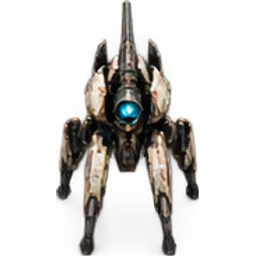
Mobile precision gun. Long reload and low armor demand a screen.
Cost 1350 · HP 30000 · Speed 88 · Base damage 7500 · Range 7c0 · Reload 85 ticksNoetic Assembly
Armored attrition. Combat units take 20% less damage but move 15% slower.
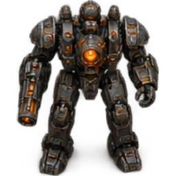
Expensive armored infantry; powerful in sustained exchanges but easily outmaneuvered.
Cost 340 · HP 14500 · Speed 62 · Base damage 1200 · Range 4c0 · Reload 30 ticks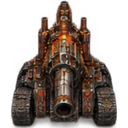
Slow siege chassis with exceptional health and high replacement cost.
Cost 1900 · HP 82000 · Speed 48 · Base damage 10000 · Range 5c0 · Reload 90 ticksNoetic Assembly
Network formations. Within four cells of a Relay Walker, combat units reload 20% faster and take 10% less damage.
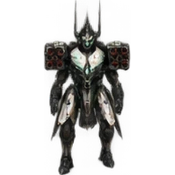
Anti-armor network infantry. Escort a relay rather than fighting alone.
Cost 400 · HP 7000 · Speed 82 · Base damage 2500 · Range 5c0 · Reload 50 ticks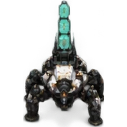
Four-cell command relay. Killing it removes the Grid formation advantage.
Cost 1100 · HP 39000 · Speed 72 · Base damage 1800 · Range 5c0 · Reload 25 ticksNoetic Assembly
Experimental skirmishers. Below half health, combat units move 30% faster and reload 15% faster; avoid sustained trades.
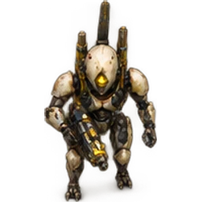
Fast experimental infantry; fragile but dangerous in short exchanges.
Cost 260 · HP 5000 · Speed 115 · Base damage 650 · Range 5c0 · Reload 18 ticks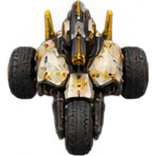
Fast harassment vehicle; withdraw wounded survivors rather than trading with tanks.
Cost 850 · HP 23000 · Speed 125 · Base damage 4200 · Range 5c0 · Reload 50 ticksForsaken Host
Fallen aristocrats. After four seconds stationary, combat units take 30% less damage but attack 15% slower.
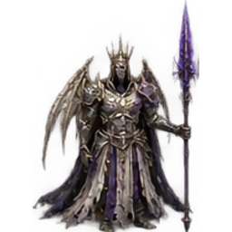
Armored fallen noble. Slow, costly infantry built to hold a position.
Cost 650 · HP 22000 · Speed 52 · Base damage 2400 · Range 4c0 · Reload 48 ticks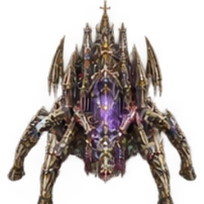
Bone-bound siege abomination; vulnerable while repositioning.
Cost 1750 · HP 78000 · Speed 45 · Base damage 11500 · Range 6c0 · Reload 105 ticksForsaken Host
Corrupted procession. Within four cells of a Lamentor, combat units deal 25% more damage but take 10% more damage.
Cheap ranged procession infantry; needs a Lamentor to reach full damage.
Cost 240 · HP 6500 · Speed 78 · Base damage 1000 · Range 4c0 · Reload 28 ticks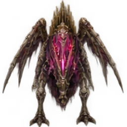
Four-cell profane hymn relay. The hymn amplifies damage dealt and received.
Cost 1200 · HP 33000 · Speed 65 · Base damage 4000 · Range 6c0 · Reload 60 ticksForsaken Host
Wounded berserkers. Below half health, combat units deal 40% more damage and move 15% faster.
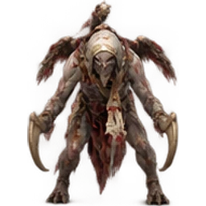
Fast melee infantry that becomes more dangerous when wounded; kite it.
Cost 250 · HP 10500 · Speed 110 · Base damage 2400 · Range 1c512 · Reload 25 ticks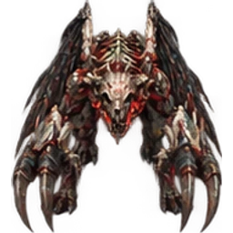
Melee abomination with a lethal wounded phase; lacks a ranged attack.
Cost 1100 · HP 55000 · Speed 95 · Base damage 6500 · Range 1c512 · Reload 42 ticksForsaken Host
Isolated hunters. With no other friendly combat unit within four cells, gain 25% speed and 20% range.
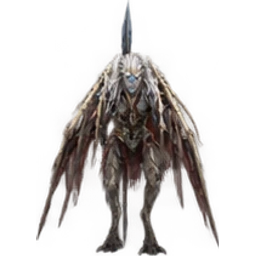
Grounded hunter with shattered wings; split from the army to gain range and speed.
Cost 400 · HP 7000 · Speed 105 · Base damage 1500 · Range 5c0 · Reload 35 ticks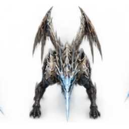
Independent flanking hunter. Clumping removes its isolation bonus.
Cost 1050 · HP 30000 · Speed 110 · Base damage 6000 · Range 6c0 · Reload 70 ticksEach realm has its own economy, production prerequisites, engineer, defenses and themed HUD. Harvesters remain safe from contact-triggered Veilglass blasts. Shared aircraft, beasts and superweapons are now available: explore the shared arsenal.
Available to all four subfactions in this realm.
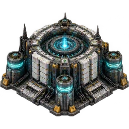
Cognition Reactor: compact hexagonal steel generator, concentric cyan coolant rings and ceramic server stacks
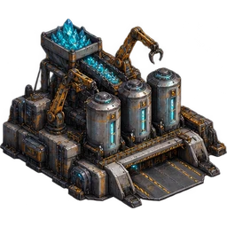
Matter Compiler: broad automated refinery, low front docking apron, three ore processing cylinders, cyan crystal hopper and industrial robot arms
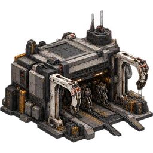
Shell Foundry: compact rectangular robot infantry assembly plant, open dark front assembly exit and two white skeletal gantries
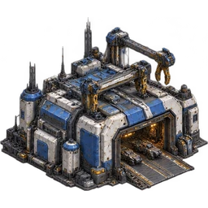
Chassis Forge: wide heavy robot vehicle factory, large front vehicle door, overhead robotic assembly cranes, blue-white industrial armor
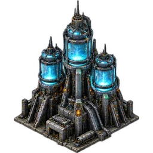
Fusion Stack: tall clustered reactors, three luminous cyan containment rings, heavy steel cooling fins
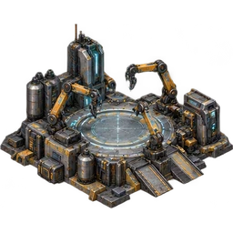
Reconstruction Bay: open low vehicle service platform, robotic repair arms around clear central pad, cyan repair arcs
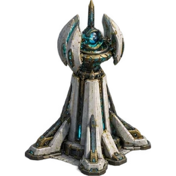
Prediction Spire: tapered white ceramic computation tower with a rotating geometric sensor crown and cyan lenses
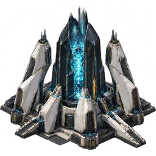
Recursion Core: large black-glass computing citadel inside interlocking white polygonal supports, brilliant cyan contained central lattice
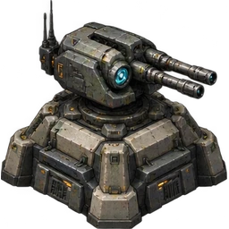
Sentry Node: compact autonomous armored twin-barrel turret on squat hexagonal bunker base, cyan targeting eye
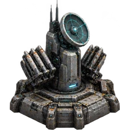
Interceptor Node: armored vertical missile battery on low hexagonal base, angled launcher pods and cyan targeting dish
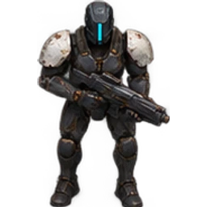
Shell Trooper: standardized autonomous biped robot, slate armored torso, white shoulder plates, cyan face strip, practical pulse rifle
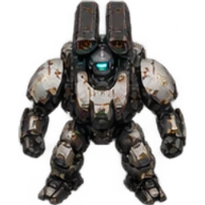
Breach Automaton: broad-shouldered armored robot carrying a twin-tube missile launcher, cyan sensor head, white and charcoal armor
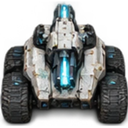
Sentinel Chassis: robust low four-track autonomous tank, white angular glacis, fixed forward cyan energy cannon, no human crew or markings
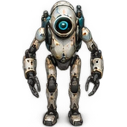
Repair Proxy: small slender utility biped robot, white ceramic body, cyan repair backpack, manipulator tool hands, no gun
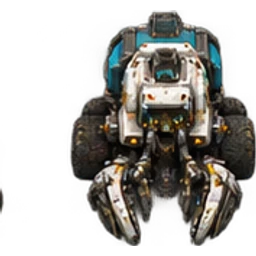
Reclaimer: heavy six-wheel autonomous mineral collector, low front articulated harvesting jaws, cyan ore container, white armored hull, no gun
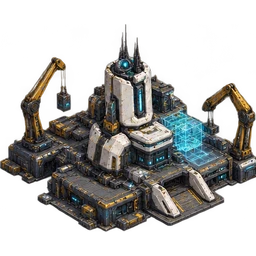
Assembly Nexus construction yard: broad modular automated construction command complex, two articulated cranes, cyan planning lattice, white ceramic command bunker and dark steel footprint
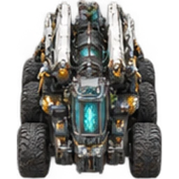
Seed Carrier mobile construction vehicle: huge folded six-wheel autonomous construction machine, collapsed white gantries, cyan core and heavy steel chassis
Available to all four subfactions in this realm.
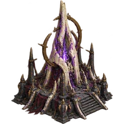
Apostate Pyre: crooked ivory bone spire enclosing a violet sacrificial flame, charred stone base and broken halo rings
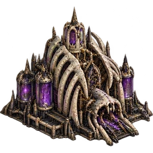
Ossuary Mill: broad grotesque bone refinery, ribbed vault, low front collector docking mouth, purple Veilglass crucibles, no detached characters
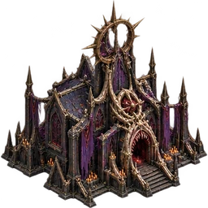
Profaned Chapel: compact distorted gothic chapel, twisted bone buttresses, mouthlike front infantry doorway, ripped violet banners and fractured halo
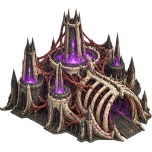
Flesh Crucible: broad living bone vehicle forge, huge rib-arch exit, tendonlike supports and violet furnace chambers, gothic ruin architecture
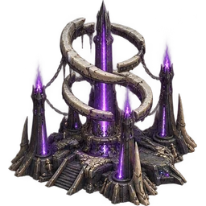
Sundered Halo: tall broken halo energy plant, three cracked hovering bone rings chained to violet-flame ossuary pylons
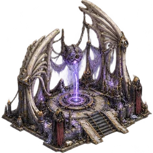
Suture Shrine: low open repair courtyard framed by bent angel wing bones, hanging spectral sutures and violet energy above central pad
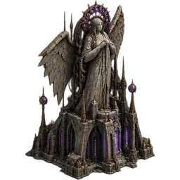
Blind Oracle: twisted eyeless giant angel statue fused into a gothic sensor tower, crown of small violet lenses and cracked wings
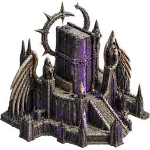
Testament Vault: imposing bone-and-black-stone library fortress, sealed violet booklike central monolith, crooked wing buttresses and broken silver halo
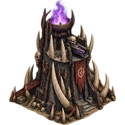
Balefire Watch: squat bone watchtower with a violet flame brazier and small skeletal gun aperture
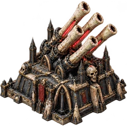
Wrath Organ: heavy gothic defensive organ, clustered long bone energy barrels over a squat armored ossuary base
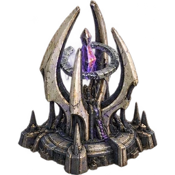
Broken Halo Battery: anti-air tower of crooked ivory prongs enclosing a fractured silver halo, violet targeting crystal
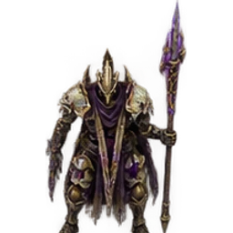
Oath Husk: skeletal fallen infantry with twisted ivory armor, closed cracked face, torn purple vestment and crooked energy spear
Blight Herald: tall hunched fallen ranged soldier, ribbed shoulders, broken small wing bones, black vestment and violet heavy judgment staff
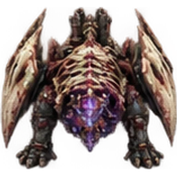
Bonebound Engine: low heavy four-legged abomination with ivory rib armor, twisted wing stump shields, forward violet energy maw
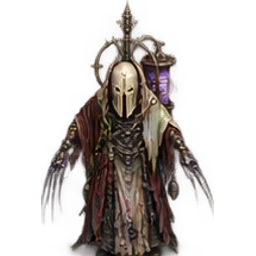
Suture Keeper: gaunt robed fallen repair priest, ivory mask, long delicate tool fingers, spectral violet thread spool, no gun
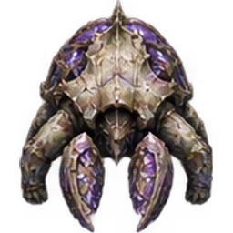
Tithe Bearer: enormous squat six-legged bone-armored mineral beast, front crystal-scooping mandibles, swollen violet ore cage on back, no weapon
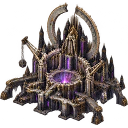
Exile Seat construction yard: sprawling ruined celestial throne-workshop, bone cranes, twisted gothic arches, violet creation well and broken enormous halo
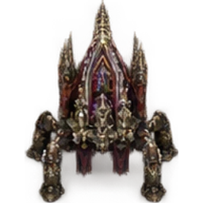
Pilgrim Ossuary mobile construction vehicle: huge lumbering six-legged walking shrine, tightly folded bone cranes and wing arches, violet core, remains a ground vehicle